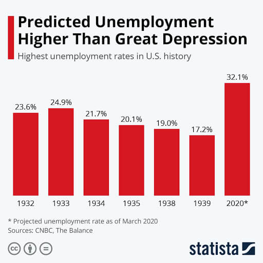

Renowned crisis analyst, Hans Myers, shows those who have lost or are scared of losing their jobs due to the global financial crisis what to do. In this article, he gives step-by-step instructions to residents of the countries most vulnerable to the crisis such as Indonesia, Thailand, India, and Vietnam. Myers explains how to save money and where to find a reliable source of extra income that will help you and your family survive even the most difficult times.
What to Expect from the Current Crisis
My clients call me the "iron lumberjack" and, as you can see, my appearance has nothing to do with it. The fact is that during my career I have faced several major financial crises. I've overcome each of them as coolly as possible: without panic, without emotion, and, if you can imagine, without serious losses.
While my clients were pulling out their hair and downing sedatives, I calmly analyzed the situation and proposed solutions. Those who ultimately followed them still thank me for the money they saved. I won’t reveal all the secrets, but I’m talking about tens and even hundreds of millions of dollars.
I saw the biggest companies close in 2008. I watched with bitterness as businessmen I knew fell into debt in 2012 in order to get back on their feet and finally went bankrupt in 2018. So, I can state with confidence that all these crises pale in comparison with what 2020 has in store for us.
I won’t rehash the news. I think you understand everything perfectly well without me. The only thing I’d like to draw your attention to is the serious economic consequences. According to a UN report, 195 million people will lose their jobs in Q3 2020. This, by the way, is an optimistic forecast. The International Labour Organization (ILO) speaks of much bleaker indicators. It’s entirely possible that by the start of next year, about 340 million workers will be unemployed.
The current unemployment rate in the US has already surpassed that of the Great Depression.
I don’t want to scare you, but I recommend bracing yourself and being on alert, especially if you live in developing countries like Vietnam, India, Indonesia, and Thailand. Remember that the poorer the country, the more difficulty it has surviving a crisis and the more the low-skilled employees who work most of the jobs suffer. I'm talking about manual laborers, taxi drivers, service-sector workers, etc.
Those who consider themselves to be middle class shouldn’t let their guard down either. The crisis is a long-term phenomenon whose consequences may deal a blow to your seemingly solid career sooner or later.
What You Need To Do to Survive the Crisis Without Losses
As you already understand, the main danger of the global financial crisis is that you could lose your job or business because of it. I’ll tell you how to prepare for such an unpleasant scenario and minimize negative consequences.
Write down these 6 simple tips from Hans Myers:
1. Create a "Safety Net”
A safety net is the amount of money that allows you or your family to live as usual while you look for a new job. As a rule, a job search takes one to five months, and if you earn $1,000 a month now, then your safety net should be $3,000, or better yet – $5,000. This money will keep you from panicking in case of unforeseen difficulties and let you calmly find a new, possibly even higher-paying job.
2. Start Cutting out Frivolous Things
Frivolous little things include coffee on your way to work, a bottle of cold beer in the evening after work, fast food on weekends, or eating lunch out on weekdays. Believe me, you can get by without all of this and save money, which you can add to your safety net.
3. Create a Spending Calculator
Have you ever calculated how much you spend in a day, month, and year? It's worth counting up! I promise that you’ll be unpleasantly surprised to find out how much money goes nowhere in particular. Nice but frivolous things, paid subscriptions, get-togethers at bars, etc. all make an impact. Knowing where your money is going can help you close the holes in your budget and save you money.
4. Work on Self-learning and Professional Development
It’s possible that you could get a promotion by learning English, and this would strengthen your position in the company and increase your pay. Another option is to learn what your colleagues are doing and offer to take on additional responsibilities. This way, you can get a promotion and reduce your risk of being laid off if the crisis reaches your company. There are more paths to development than it seems. Think about it now.
5. Find an Additional Source of Income
In my opinion, this is the most important and most effective way to deal with any financial crisis, even the most serious ones. Imagine that you have a job and another source of income that can bring in money. It may possibly bring in more money than your main job.
For example, by combining work with an additional source of income, you can save the extra money and create a safety net in case of a lay off. If you are laid off, use it to support an adequate standard of living for yourself and your family.
Combine to Earn More
Now we’ve come to the most interesting part: where to find such a source of additional income that will bring in some tangible money without interfering with your main job. Of course, after work you can drive for Uber for a few more hours, or work as a night-shift nurse – they say this pays decently.
However, how long will you last with such an intense schedule? Most likely, after a couple of weeks of extra shifts, your family won’t remember what you look like and you won’t have the strength for either your main or side job.
Going over all possible options for additional income, I came to the conclusion that trading was the best one. This is the approach that will allow you to earn decent money without compromising your main job. A couple of hours a day or several hours a week is enough for you to earn a sizable amount while avoiding physical stress and needless anxiety.
When trading, you can get a percentage of the profit through an ordinary transfer to a bank card. Plus, by choosing the right broker, you can make the number of trades you need in a day and earn 80% to 92% on each successful trade.
All you need to earn money by trading is a laptop or smartphone with Internet access. Some knowledge about trading is also helpful if you want to earn a lot. This rule applies here, just like in any business: the more you know, the more you earn.
How much more? Calculate for yourself how much you can earn by trading.
The Final and Most Important Piece of Advice
In trading, it’s very important to choose a proven, reputable platform, which is why I recommend Olymp Trade. Originally, it was suggested by my clients, but I have full faith and confidence in the platform and it provides great income.
In addition, this broker puts $10,000 in a demo account, which is a great option to try out trading and master the mechanics without risking real money.
I also trade on Olymp Trade and I’m ready to share a strategy that gave me good results at the very start of my journey. It’s entirely possible that it will work for you as well.
Calculate how much you can earn together with Olymp Trade
Complete all fields for calculations
Minimum basic trade amount: $1
Maximum recommended basic trade amount: $100
amount
income
required
level
How do you start earning money?
Open an account with the broker by clicking here.
Take the tutorial, which tells you about your account’s capabilities.
Now, the best part is a proven earning strategy that works
I recommend starting with an “up-down” strategy, as it doesn’t require serious immersion in trading and even beginners can use it.
Step 1. Choose a currency pair
As a rule, EUR/USD works well.
Step 2. Set the time to 1 minute and the amount to $1
If you want to earn more, then make a higher bet. However, I’ll explain the strategy by using this particular minimum bet as an example.
Step 3. Start trading
Everything here is simple – you have to predict whether the exchange rate will rise or fall within 1 minute after opening a trade. Remember that you can make any forecast with this strategy – it doesn’t matter whether you choose UP or DOWN.
Let’s say that you’ve chosen UP
-
If the chart actually goes up, $1.82 will be returned to your account, having made 82 cents in profit
Then you need to make your next trade, but this time you should choose the opposite value — DOWN. Of course, you can bet with a larger amount if you want to earn more.
-
If the chart goes the other way (down), then your trade was unsuccessful
This means that you need to raise your next trade to $3 and change the direction of the chart again. So, if your last choice was DOWN, now you need to choose UP.
-
If the chart didn’t go the way you wanted again, then you lose this trade
But don’t worry. You have nothing to worry about because with this strategy you always make up for all losses. To recoup your losses and make a profit, increase the trade amount to $8 (without changing the trade time) and choose DOWN.
Excellent! You chose the right direction and received $14.56. You not only made up for the loss, but also went into the black by making a profit. Now go back to trading and make a new bet, but this time you need to choose UP. Yes, that’s why it’s called the up-down strategy ;)
Important point
Always change the direction of trades regardless of whether or not your bid was successful. If you want to test your strength, then start with a minimum bet of $1. If you lose, increase the amount to $3. If you lose again, change it to $8. If this happens again, increase the amount to $18. And don’t worry, I’ve personally never had to do this, even though I trade every day. Once a trade is successful, return to the first step and start again. The amount of the bet can be increased because this strategy works for any amount. And don’t forget: the bigger the bet, the bigger the profit!
And finally, I'm giving my personal promo code to everyone who wants to trade. Every trader can enter a specific set of characters in the special "Promo code" field and get a bonus when making a deposit. BONUS: 30%